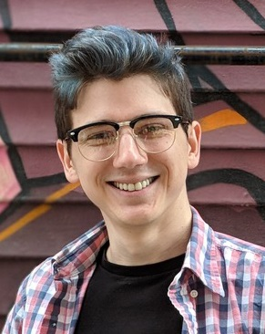

Speaker 1 : Dr. Dengxin Dai, ETH Zurich
Dengxin Dai is a Senior Researcher and Group Leader working with the Computer Vision Lab at ETH Zurich. He obtained his PhD in Computer Vision at ETH Zurich, in 2016. Since then he is the Team Lead of TRACE-Zurich project, working on autonomous driving within the R&D project "TRACE: Toyota Research on Automated Cars in Europe". His research interests lie in autonomous driving, robust perception in adverse weather and illumination conditions, and automotive sensors.
He has organized a CVPR’19 Workshop on Vision for All Seasons: Bad Weather and Nighttime, and is organizing an ICCV’19 workshop on Autonomous Driving. He has been a program committee member of several major computer vision conferences and received multiple outstanding reviewer awards. He is a guest editor for the IJCV special issue “Vision for All Seasons” and is an area chair for WACV 2020.
Speaker 2 : Prof. Jean-François Lalonde, Laval University
Jean-François Lalonde is an Associate Professor in Electrical and Computer Engineering at Laval University, Quebec City, since 2013. Previously, he was a Post-Doctoral Associate at Disney Research, Pittsburgh. He received a B.Eng. degree in Computer Engineering with honors from Université Laval, Canada, in 2004. He earned his M.S at the Robotics Institute at Carnegie Mellon University in 2006 under Prof. Martial Hebert and received his Ph.D., also from Carnegie Mellon, in 2011 under the supervision of Profs. Alexei A. Efros and Srinivasa G. Narasimhan. His research interests are in computer vision and deep learning, with a particular focus on lighting estimation, 3D reconstruction, tracking, and augmented reality.
Speaker 3 : Dr. Anton Bakhtin, Facebook AI Research
Anton Bakhtin is a Research Engineer at Facebook AI Research, Montreal. He is leading PHYRE project that aims to improve intuitive physical reasoning for AI agents. Previously, he was working on model compression for speech recognition at Google and automated ontology construction at Yandex. He earned his M.S. degree in Mathematics at Moscow State University in 2006. His research interests are in deep learning, with a particular focus on self-supervised and representation learning.